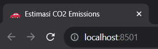
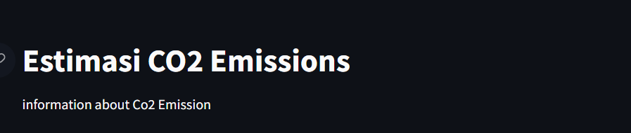
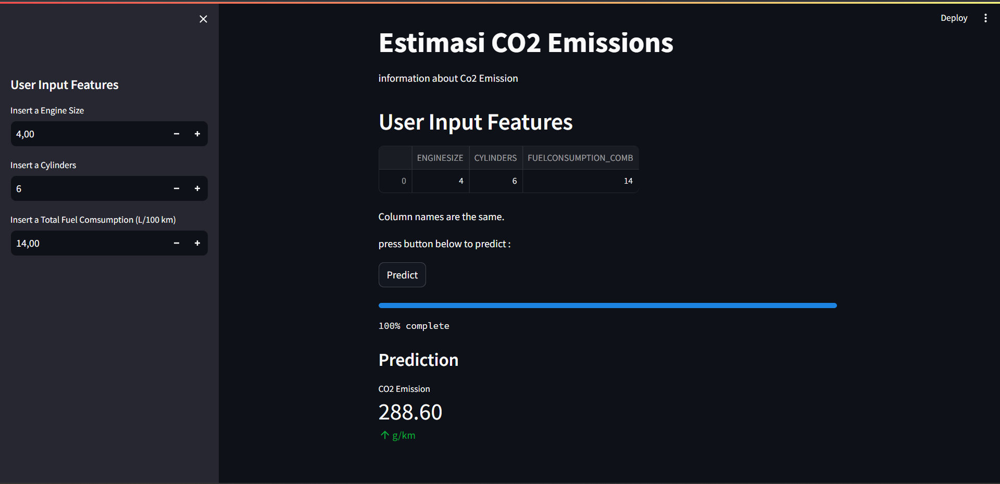

10 Deployment
10.1 Pendahuluan
Deployment model data science dilakukan untuk memastikan model yang dibuat dapat digunakan oleh orang lain. Deployment model data science dapat dilakukan dengan berbagai cara, salah satunya adalah dengan menggunakan Streamlit.
Streamlit adalah sebuah framework yang dapat digunakan untuk membuat aplikasi web dengan menggunakan bahasa pemrograman Python. Dengan menggunakan Streamlit, deployment model data science dapat dilakukan dengan mudah dan cepat.
10.2 Instalasi Streamlit

Untuk menginstall Streamlit, dapat dilakukan dengan menggunakan perintah berikut pada command prompt atau terminal:
pip install streamlit10.3 Membuat Aplikasi Web dengan Streamlit
Setelah Streamlit terinstall, langkah selanjutnya adalah membuat aplikasi web dengan menggunakan Streamlit. Untuk membuat aplikasi web dengan Streamlit, dapat dilakukan dengan cara membuat file python baru dengan nama app.py. Kemudian, pada file tersebut, tuliskan kode berikut:
# streamlit umumnya diinisialisasi dengan 'st'
import streamlit as stLink Dataset : Here
10.4 API Streamlit
API Streamlit dapat digunakan untuk membuat aplikasi web dengan Streamlit. API Streamlit dapat dilihat pada dokumentasi Streamlit. Berikut adalah beberapa API Streamlit yang dapat digunakan untuk membuat aplikasi web dengan Streamlit:
10.4.1 Page Config
st.set_page_config dapat digunakan untuk mengatur konfigurasi halaman. Beberapa konfigurasi yang dapat diatur adalah judul halaman, layout halaman, dan lain-lain. Berikut adalah contoh penggunaan st.set_page_config untuk mengatur judul halaman:
st.set_page_config(
page_title = "Estimasi CO2 Emissions",
page_icon = ':car: | :red_car:' #nama emoji
)
10.4.2 Write
st.write dapat digunakan untuk menampilkan teks, dataframe, dan visualisasi. Format penulisan dalam method ini adalah format markdown. Berikut adalah contoh penggunaan st.write untuk menampilkan teks:
# st.write dapat digunakan menampilkan test,dataframe,visualisasi
st.title('Estimasi CO2 Emissions')
st.write('information about Co2 Emission')
10.4.4 Input User
Untuk memasukkan elemen input user dalam sidebar dapat dilakukan dengan menggunakan st.sidebar.slider, st.sidebar.selectbox ,sidebar.number_input dan lain sebagainya . Berikut adalah contoh input data pada sidebar:
def user_input_features():
EngineSize = st.sidebar.number_input('Insert a Engine Size', 1.0 , 8.4) #(label,minvalues,maxvalues,initial values)
Cylinders = st.sidebar.number_input('Insert a Cylinders', 3 , 16)
FuelConsumptionTotal = st.sidebar.number_input('Insert a Total Fuel Comsumption (L/100 km)', 1.0 , 25.8)
data = {'ENGINESIZE': EngineSize,
'CYLINDERS': Cylinders,
'FUELCONSUMPTION_COMB': FuelConsumptionTotal
}
features = pd.DataFrame(data,index=[0])
return features
df = user_input_features()
st.header("User Input Features")
st.write(df)- slider digunakan untuk memasukkan elemen input user berupa angka
- checkbox digunakan untuk memasukkan elemen input user berupa boolean
- multiselect digunakan untuk memasukkan elemen input user berupa list
- number_input digunakan untuk memasukkan elemen input user berupa numeric
10.4.5 Pengecekan Dataframe
Setelah data input user diubah menjadi dataframe, perlu dilakukan pengecekan apakah dataframe tersebut sudah sesuai dengan dataframe yang digunakan untuk training. Berikut adalah code untuk mengecek dataframe:
dfModel = pd.read_csv('data/FuelConsumption.csv')
dfModel = dfModel[['ENGINESIZE','CYLINDERS','FUELCONSUMPTION_COMB','CO2EMISSIONS']]
df2 = dfModel.iloc[:,:-1]
if df.columns.equals(df2.columns):
st.write("Column names are the same.")
else:
st.write("Column names are different.")Urutan kolom hasil input user harus sama dengan urutan kolom pada data training. Jika tidak, maka akan terjadi error atau membuat hasil prediksi menjadi tidak valid.
10.4.6 Prediksi
Untuk melakukan prediksi, model perlu di-load terlebih dahulu. Berikut adalah code untuk melakukan prediksi:
# separate the feature and target
X = dfModel.iloc[:,:-1]
Y = dfModel.iloc[:,-1]
# splitting data into data train and test
x_train,x_test,y_train,y_test = train_test_split(X,Y,test_size = 0.3 ,random_state = 42)
# creating model
LinearReg = LinearRegression()
LinearReg.fit(x_train,y_train)Dalam contoh ini menggunkan model Linear Regression . Untuk melakukan prediksi, dapat dilakukan dengan menggunakan code berikut:
st.write('press button below to predict : ')
if st.button('Predict'):
# create progres bar widget with initial progress is 0%
bar = st.progress(0)
# create an empty container or space
status_text = st.empty()
for i in range(1,101):
# create a text to showing a percentage process
status_text.text("%i%% complete" %i)
# give bar progress values
bar.progress(i)
# give bar progress time to execute the values
time.sleep(0.01)
ypred = LinearReg.predict(df)
ypred = float(ypred[0])
ypred = "{:.2f}".format(ypred)
st.subheader('Prediction')
st.metric('CO2 Emission',ypred,' g/km')10.4.7 Hasil akhir
